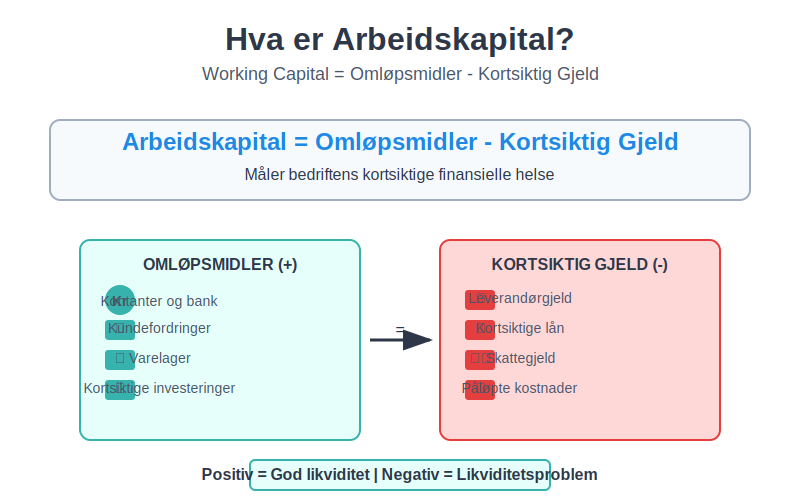
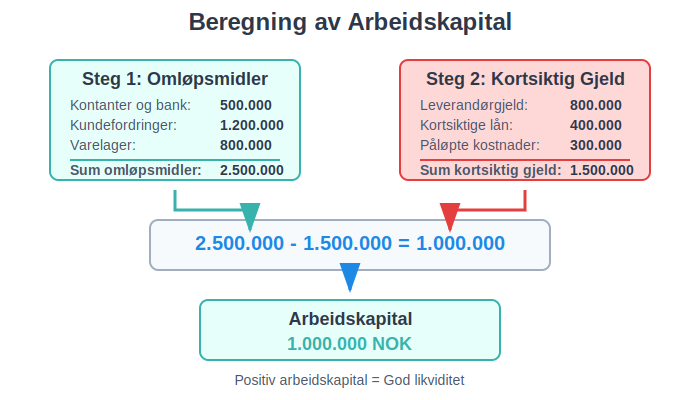
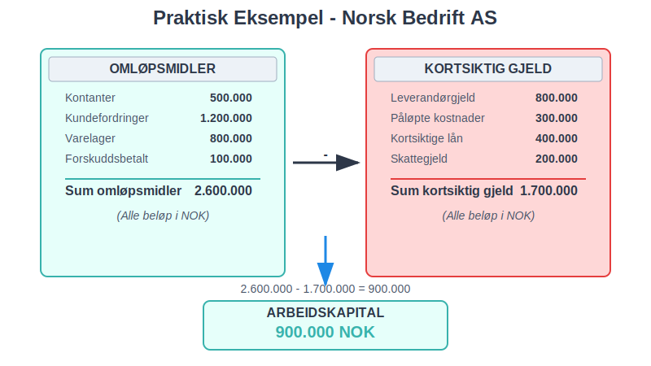
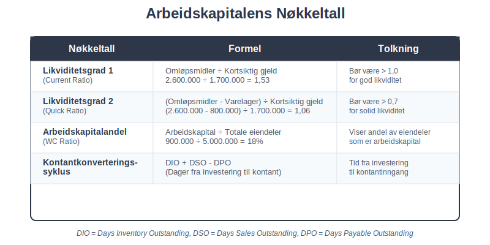
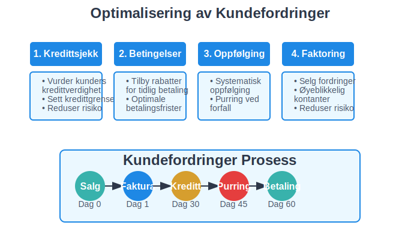
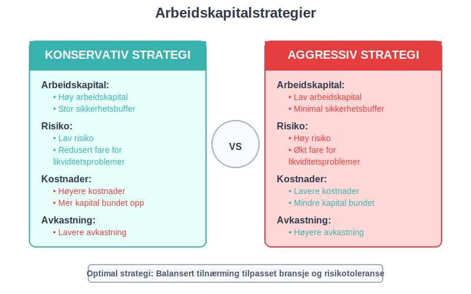
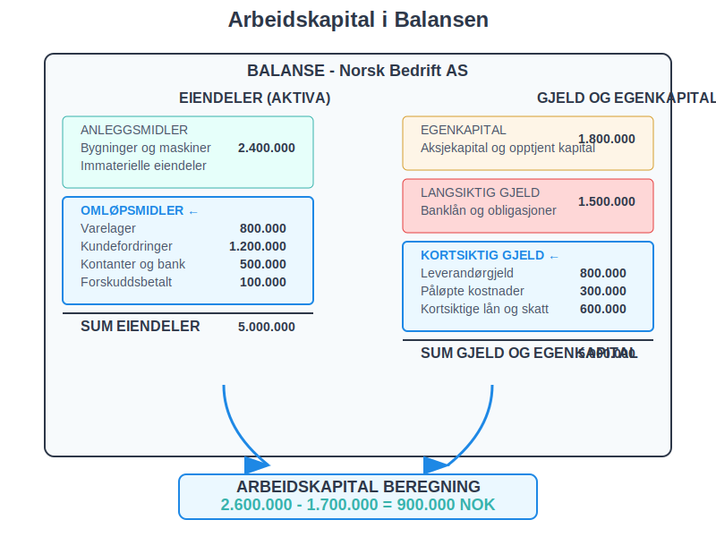
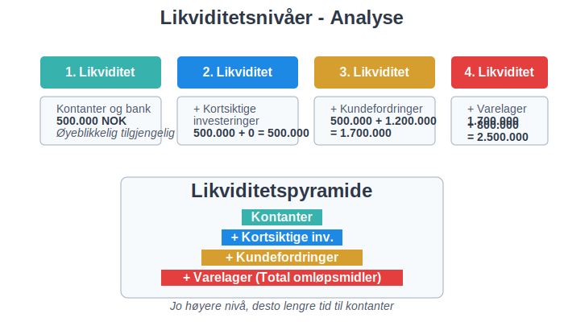
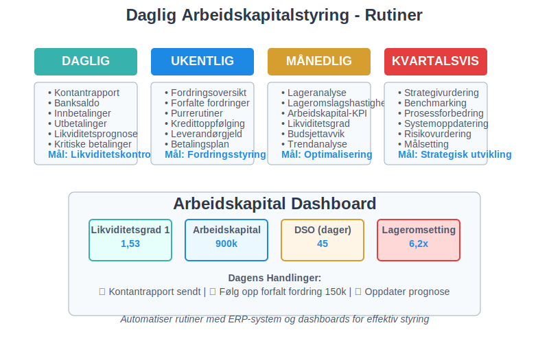

Arbeidskapital er differansen mellom omløpsmidler og kortsiktig gjeld, og representerer bedriftens evne til å finansiere den daglige driften. Som en sentral komponent i bedriftens totale kapital og finanskapital, er arbeidskapital et kritisk mål på likviditet og finansiell helse som viser om bedriften kan møte sine kortsiktige forpliktelser. God arbeidskapitalstyring er grunnleggende for å opprettholde betalingsevne og sikre bedriftens finansielle stabilitet.
For å vurdere bedriftens kapitalbehov, se vår artikkel om Kapitalbehov.

Seksjon 1: Definisjon og Grunnleggende Prinsipper
1.1 Hva er Arbeidskapital?
Arbeidskapital (working capital) beregnes som:
Arbeidskapital = Omløpsmidler - Kortsiktig gjeld
Dette målet viser hvor mye likvide ressurser bedriften har tilgjengelig etter at alle kortsiktige forpliktelser er dekket. En positiv arbeidskapital indikerer at bedriften har tilstrekkelige ressurser til å drive virksomheten, mens negativ arbeidskapital kan signalisere likviditetsproblemer.

1.2 Komponenter i Arbeidskapital
Arbeidskapital består av to hovedkomponenter som finnes i balansen:
Omløpsmidler (Aktiva)
- Kassebeholdning og bankinnskudd: Mest likvide eiendeler
- Kundefordringer: Penger kunder skylder bedriften
- Varelager: Råvarer, varer under tilvirkning og ferdigvarer som aktiveres gjennom varekjøp og verdsettes basert på varekostnad
- Forskuddsbetalte kostnader: Forhåndsbetalte utgifter
- Kortsiktige investeringer: Verdipapirer som kan selges raskt
Kortsiktig Gjeld (Passiva)
For en detaljert gjennomgang av alle typer kortsiktig gjeld, se vår omfattende guide om kortsiktig gjeld.
- Leverandørgjeld: Penger bedriften skylder leverandører
- Påløpte kostnader: Opptjente men ikke betalte utgifter
- Kortsiktige lån: Lån som forfaller innen ett år
- Skattegjeld: Skyldig skatt til myndighetene
- Annen kortsiktig gjeld: Diverse kortsiktige forpliktelser
Seksjon 2: Beregning og Analyse av Arbeidskapital
2.1 Praktisk Beregningseksempel
La oss se på et konkret eksempel fra en norsk bedrift:

| Omløpsmidler | Beløp (NOK) | Kortsiktig Gjeld | Beløp (NOK) |
|---|---|---|---|
| Kontanter | 500.000 | Leverandørgjeld | 800.000 |
| Kundefordringer | 1.200.000 | Påløpte kostnader | 300.000 |
| Varelager | 800.000 | Kortsiktige lån | 400.000 |
| Forskuddsbetalt | 100.000 | Skattegjeld | 200.000 |
| Sum omløpsmidler | 2.600.000 | Sum kortsiktig gjeld | 1.700.000 |
Arbeidskapital = 2.600.000 - 1.700.000 = 900.000 NOK
2.2 Arbeidskapitalens Nøkkeltall
For å analysere arbeidskapital brukes flere viktige nøkkeltall:

| Nøkkeltall | Formel | Tolkning |
|---|---|---|
| Likviditetsgrad 1 | Omløpsmidler ÷ Kortsiktig gjeld | Bør være > 1,0 for god likviditet |
| Likviditetsgrad 2 | (Omløpsmidler - Varelager) ÷ Kortsiktig gjeld | Bør være > 0,7 for solid likviditet |
| Arbeidskapitalandel | Arbeidskapital ÷ Totale eiendeler | Viser andel av eiendeler som er arbeidskapital |
| Kontantkonverteringssyklus | DIO + DSO - DPO | Tid fra investering til kontantinngang |
2.3 Bransjespesifikke Forskjeller
Arbeidskapitalbehov varierer betydelig mellom bransjer:
- Detaljhandel: Høyt varelager, lave kundefordringer
- Produksjon: Høyt varelager og kundefordringer
- Tjenester: Lave varelager, høye kundefordringer
- Bygg og anlegg: Høye kundefordringer, variable varelager
Seksjon 3: Arbeidskapitalens Komponenter i Detalj
3.1 Kundefordringer (Accounts Receivable)
Kundefordringer representerer penger kunder skylder for leverte varer eller tjenester. Effektiv styring av kundefordringer er kritisk for arbeidskapital. For en dyptgående forståelse av debitor og debitorhåndtering, se vår omfattende guide.

Optimalisering av Kundefordringer
- Kredittsjekk: Vurder kunders kredittverdighet før salg
- Betalingsbetingelser: Tilby rabatter for tidlig betaling
- Automatisk avstemming: Bruk BankGiro for raskere innbetaling og automatisk avstemming
- Oppfølging: Systematisk oppfølging av forfalte fordringer gjennom betalingspåminnelser
- Inkassoalternativer: Velg mellom egeninkasso eller profesjonelle inkassotjenester for hardnakkede saker
- Factoring: Selg fordringer til factoringselskaper for øyeblikkelig kontantstrøm og redusert kredittrisiko
3.2 Varelager (Inventory)
Lagerbeholdning binder opp betydelig arbeidskapital og må balanseres mellom tilgjengelighet og kostnader. Effektiv lagerstyring krever forståelse av verdivurderingsmetoder som FIFO og vektet gjennomsnitt, samt systematisk oppfølging av lageromsetning og lagerkostnader.
Lageroptimalisering
- Just-in-time: Reduser lagernivåer gjennom bedre planlegging
- ABC-analyse: Prioriter styring av høyverdige varer
- Lageromslagshastighet: Øk hvor ofte lageret omsettes
- Sesongplanlegging: Tilpass lagernivåer til sesongvariasjoner
For detaljhandel er lageroptimalisering spesielt kritisk på grunn av høyt transaksjonsvolum, mange varelinjer og utfordringer som svinn og tyveri som påvirker arbeidskapitalen betydelig.
3.3 Leverandørgjeld (Accounts Payable)
Leverandørgjeld er en viktig finansieringskilde som kan optimaliseres for bedre arbeidskapital.
Strategier for Leverandørgjeld
- Betalingsbetingelser: Forhandle lengre betalingsfrister
- Leverandørkreditt: Utnytt leverandørers kredittfasiliteter som en kostnadseffektiv finansieringsform
- Kontantrabatter: Vurder om tidlig betaling lønner seg
- Sentralisert innkjøp: Oppnå bedre betingelser gjennom volum
Seksjon 4: Arbeidskapitalstyring og Optimalisering
4.1 Arbeidskapitalstrategier
Bedrifter kan velge mellom ulike strategier for arbeidskapitalstyring:

Konservativ Strategi
- Høy arbeidskapital: Stor sikkerhetsbuffer
- Lav risiko: Redusert fare for likviditetsproblemer
- Høyere kostnader: Mer kapital bundet opp
- Lavere avkastning: Mindre effektiv kapitalbruk
Aggressiv Strategi
- Lav arbeidskapital: Minimal sikkerhetsbuffer
- Høy risiko: Økt fare for likviditetsproblemer
- Lavere kostnader: Mindre kapital bundet opp
- Høyere avkastning: Mer effektiv kapitalbruk
4.2 Kontantstrømstyring
Arbeidskapital påvirker direkte bedriftens kontantstrøm og er en sentral del av likviditetsstyring. Arbeidskapitalstyring må koordineres med:
- Budsjetter: Planlegg arbeidskapitalbehov
- Prognoser: Forutsi sesongvariasjoner
- Finansiering: Sikre tilstrekkelig kredittramme
- Forskuddsbetalinger: Bruk avanse for å forbedre kontantstrøm
- Overvåking: Løpende oppfølging av nøkkeltall
Seksjon 5: Arbeidskapital i Regnskapet
5.1 Presentasjon i Årsregnskapet
Arbeidskapital fremkommer ikke direkte i regnskapet, men beregnes fra balanseopplysninger. For en dyptgående forståelse av balansens oppbygging og hvordan arbeidskapitalkomponentene inngår i det totale bildet, se vår omfattende guide om balanseregnskap.

Balansepresentasjon
EIENDELER (AKTIVA)
- Anleggsmidler
- Omløpsmidler ← Del av arbeidskapital
- Varelager
- Kundefordringer
- Kontanter og bankinnskudd
GJELD OG EGENKAPITAL
- Egenkapital
- Langsiktig gjeld
- Kortsiktig gjeld ← Del av arbeidskapital
- Leverandørgjeld
- Annen kortsiktig gjeld
5.2 Kontantstrømoppstilling og Arbeidskapital
Kontantstrømoppstillingen er et kritisk finansielt dokument som viser hvordan endringer i arbeidskapital påvirker bedriftens kontantstrøm fra drift. Arbeidskapitalendringer er en av hovedkomponentene i kontantstrømoppstillingen og kan ha betydelig innvirkning på bedriftens likviditet.
I kontantstrømoppstillingen vises endringer i arbeidskapital som påvirker kontantstrømmen fra drift:
| Endring i arbeidskapitalkomponenter | Effekt på kontantstrøm |
|---|---|
| Økning i kundefordringer | Negativ (mindre kontanter) |
| Reduksjon i kundefordringer | Positiv (mer kontanter) |
| Økning i varelager | Negativ (mindre kontanter) |
| Reduksjon i varelager | Positiv (mer kontanter) |
| Økning i leverandørgjeld | Positiv (mer kontanter) |
| Reduksjon i leverandørgjeld | Negativ (mindre kontanter) |
For en omfattende forståelse av hvordan arbeidskapitalendringer beregnes og presenteres i kontantstrømoppstillingen, inkludert direkte og indirekte metoder, se vår detaljerte guide til kontantstrømoppstilling. For dyptgående analyseteknikker og strategier for å optimalisere kontantstrøm gjennom arbeidskapitalstyring, anbefaler vi vår omfattende artikkel om kontantstrømanalyse.
Seksjon 6: Arbeidskapital og Finansiell Analyse
6.1 Likviditetsanalyse
Arbeidskapital er grunnlaget for likviditetsanalyse som vurderer bedriftens betalingsevne:

Likviditetsnivåer
- Første likviditet: Kontantbeholdning - kontanter og bankinnskudd
- Andre likviditet: + kortsiktige investeringer
- Tredje likviditet: + kundefordringer
- Fjerde likviditet: + varelager (total omløpsmidler)
For systematisk planlegging og styring av likviditet gjennom detaljert kontantstrømplanlegging, er likviditetsbudsjett et essensielt verktøy som komplementerer arbeidskapitalanalysen ved å gi fremtidsrettet oversikt over inn- og utbetalinger.
6.2 Arbeidskapitalens Påvirkning på Lønnsomhet
Arbeidskapital påvirker lønnsomhet gjennom:
- Kapitalkostnader: Bundet kapital har en kostnad som påvirker nullpunkt-analyse
- Operasjonell effektivitet: Optimal arbeidskapital forbedrer drift
- Vekstmuligheter: Tilstrekkelig arbeidskapital muliggjør vekst
- Risikostyring: Balanserer risiko og avkastning
Effektiv arbeidskapitalstyring påvirker direkte bedriftens bruttofortjeneste ved å optimalisere kostnadene knyttet til varelager, kundefordringer og leverandørgjeld.
For å analysere hvordan arbeidskapital påvirker lønnsomhet på ulike nivåer i organisasjonen, kan avdelingsregnskap være et verdifullt verktøy for å måle effektivitet og kapitalallokering per avdeling.
Seksjon 7: Praktiske Tips for Arbeidskapitalstyring
7.1 Daglig Arbeidskapitalstyring

Rutiner for Optimal Styring
- Daglig kontantrapport: Overvåk likviditetssituasjonen
- Ukentlig fordringsoversikt: Følg opp forfalte kundefordringer med betalingsoppfordringer
- Månedlig lageranalyse: Vurder lagernivåer og omslagshastighet
- Kvartalsvis strategivurdering: Evaluer arbeidskapitalstrategi
7.2 Teknologi og Automatisering
Moderne teknologi kan forbedre arbeidskapitalstyring:
- ERP-systemer: Integrert styring av alle komponenter
- Automatisk fakturering: Reduser tid fra levering til faktura
- Elektronisk betaling: Raskere innbetaling fra kunder
- Prediktiv analyse: Forutsi arbeidskapitalbehov
Seksjon 8: Arbeidskapital i Ulike Livsfaser
8.1 Oppstartsfase
Utfordringer:
- Høyt arbeidskapitalbehov
- Begrenset tilgang til finansiering
- Usikre kontantstrømmer
Strategier:
- Konservativ tilnærming
- Fokus på kontantstrøm
- Minimere varelager
- Vurdere alternative finansieringsformer som crowdsourcing
8.2 Vekstfase
Utfordringer:
- Økende arbeidskapitalbehov
- Rask vekst i kundefordringer
- Skalering av operasjoner
Strategier:
- Balansert tilnærming
- Investere i systemer
- Profesjonalisere kredittstyring
8.3 Moden fase
Utfordringer:
- Optimalisere effektivitet
- Konkurranse på marginer
- Stabile men lavere vekstrater
Strategier:
- Aggressiv optimalisering for selvfinansiering
- Fokus på kapitalomsetting
- Avanserte styringsverktøy
Konklusjon
Arbeidskapital er et fundamentalt konsept i finansiell styring som krever kontinuerlig oppmerksomhet og optimalisering. Ved å forstå sammenhengen mellom omløpsmidler og kortsiktig gjeld, kan bedrifter forbedre sin likviditet, redusere finansieringskostnader og øke lønnsomhet.
Effektiv arbeidskapitalstyring krever:
- Systematisk overvåking av nøkkeltall og trender
- Balansert tilnærming mellom risiko og avkastning
- Integrert styring av alle arbeidskapitalkomponenter
- Kontinuerlig forbedring av prosesser og systemer
For mer informasjon om relaterte emner, se våre artikler om aktiva, saldobalanse og regnskap.